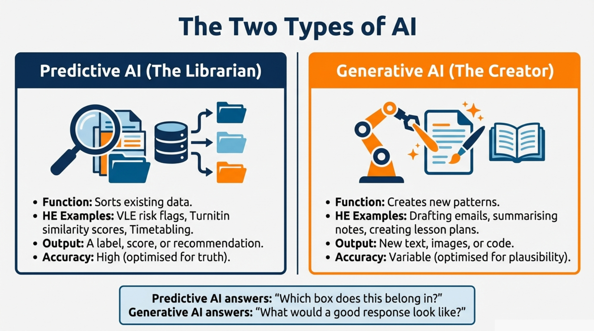
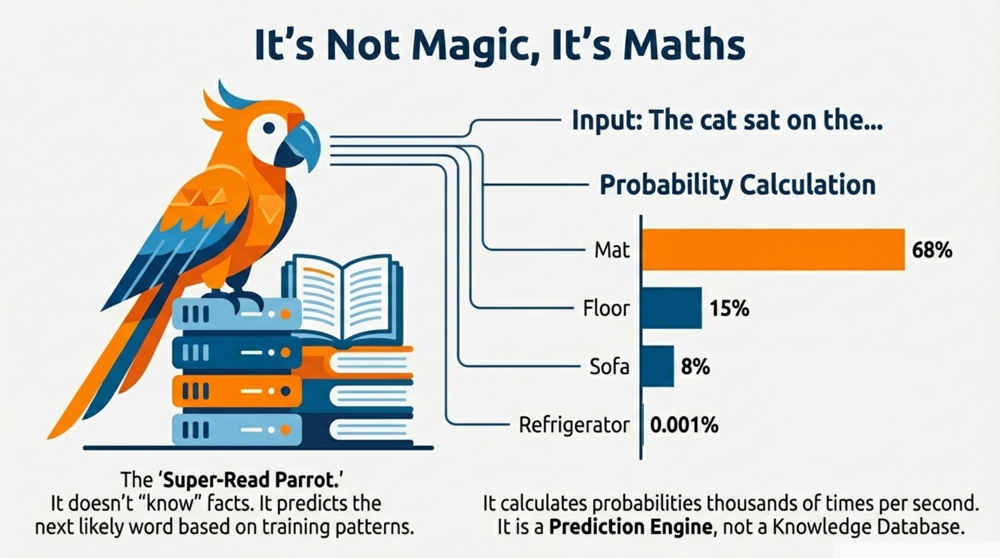
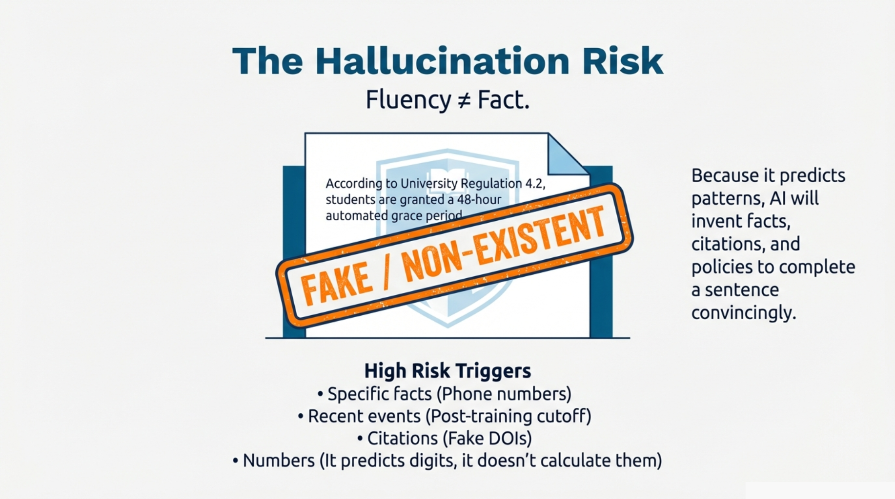

MODULE 2 · What is AI?
Module 2: What is AI?
It's Not Magic, It's Maths
Introduction
Now that we know AI can fool us, we need to understand how it works. Not because you need to become a computer scientist, but because understanding the mechanism helps you predict when things will go wrong.
If you read the news, you might think AI is a sentient brain that "thinks," "reasons," and "understands" the world. It is not. The AI tools we use today - ChatGPT, Copilot, Claude, Gemini - are sophisticated prediction engines. They do not know the answer; they calculate the most likely answer.
This distinction matters. A colleague who knows the answer will tell you if they are uncertain. A prediction engine will confidently give you whatever sounds most plausible - even if it is completely wrong.
To understand this properly, we need to distinguish between the "Old AI" we have used for years and the "New AI" everyone is talking about.

Two Types of AI
Predictive AI (the "Librarian") is what you have used for years. It looks at existing data and sorts it into categories. Examples in higher education include email spam filters, VLE early-warning systems that flag students at risk, library recommendation tools, and timetabling software that minimises room clashes. The output is a label, a score, or a sorted list - and accuracy is usually high because there is often a clear right answer.
Generative AI (the "Creator") is the new technology everyone is talking about. It creates new content that resembles the content it was trained on. Tools include ChatGPT, Copilot, Claude, DALL-E, and GitHub Copilot. The output is new text, images, or code that did not exist before. Accuracy is variable - because it is creating rather than retrieving, it can produce content that sounds perfect but is factually hollow.
Predictive AI answers "Which box does this belong in?" Generative AI answers "What would a good answer look like?" That second question is why generative AI is both powerful and dangerous. It is optimising for plausibility, not truth.
The "Super Parrot" Analogy
Imagine a parrot with a perfect memory that has read every book in every university library, every Wikipedia article, every public webpage, every academic paper and news article. This parrot does not understand what it has read. It does not know what a "university" actually is, what "ethics" means, or whether something is true or false. But it has developed an extraordinarily sophisticated sense of which words tend to follow other words in different contexts.
When you ask the parrot a question, it does not search a database for the answer. Instead, it predicts - one word at a time - what a good response would look like, based on all the text it has seen.
Watching the Parrot Think

If you say to the parrot:
"The cat sat on the..."
The parrot instantly calculates probabilities based on billions of sentences:
Next word | Probability |
|---|---|
mat | 68% |
floor | 15% |
sofa | 8% |
windowsill | 4% |
refrigerator | 0.001% |
It picks "mat" (or samples from the top options) and moves on. Then it predicts the next word. And the next. Thousands of times per second, until it has built a complete response.
This is why we call it "Generative." It is generating a statistically plausible sequence of words, not looking up facts in a database.
Why Hallucinations Happen
Hallucination Trigger Points

Remember the fake regulation from Module 1?
"According to Regulation Section 4.2, students are granted a 48-hour automated grace period..."
Why did the AI invent this? Because it was not trying to tell the truth. It was trying to complete a pattern.
In its training data:
- "Regulation" is often followed by "Section" and a number
- "Grace period" is often followed by a time like "48 hours" or "72 hours"
- Policy statements typically include specific references
The AI assembled these fragments into a sentence that sounds authoritative but has no factual basis.
AI is most likely to hallucinate when your request involves:
Trigger | Example | Why it fails |
|---|---|---|
Specific facts | "What is the phone number for Student Services?" | It may not have this data, but phone numbers follow predictable patterns |
Recent events | "Summarise yesterday's Senate meeting" | Its training data has a cutoff date; it cannot know recent events |
Niche or local information | "What are the opening hours of the Streatham campus library?" | Specific institutional details may be absent or outdated |
Citations and references | "Give me three academic sources on cognitive load theory" | It knows what citations look like but may invent plausible-sounding ones |
Numbers and statistics | "What percentage of students use AI for assignments?" | It will generate a number that sounds reasonable, not one that is verified |
The more specific, recent, or local your question, the higher the hallucination risk. General knowledge questions are relatively safe. Specific institutional questions are high-risk unless you provide the source material.
General knowledge questions ("Explain photosynthesis") are relatively safe.
Specific institutional questions ("What does our policy say about...") are high-risk unless you provide the source material.
So, if the Parrot is just predicting words and might make things up, is it safe to use at work?
Yes - but only if you know how to check that you are using a protected version (see Module 3, Part 1), understand the different modes available (Module 3, Part 2), and develop good habits for when to start fresh.
In the next module, we will get hands-on with Microsoft Copilot and learn to navigate the interface safely.
Activity: The Prediction Game
What word is a Generative AI most likely to predict to complete the sentence: "To be or not to..."?
You ask an AI to complete: "According to the University of Exeter's 2024 policy on generative AI..." What is the most likely outcome?
AI Strengths and Weaknesses
AI is strong at: pattern-based tasks (drafting emails, reformatting text, explaining concepts simply), creative ideation (generating options, brainstorming), summarisation (condensing long documents when you provide the source), and translation and tone adjustment.
AI is weak at: factual accuracy (anything requiring verified or specific information), maths and calculations (it predicts digits rather than calculating them), institutional knowledge (your specific policies, procedures, and context), and judgement calls (decisions requiring empathy, ethics, or contextual understanding).
Summary
Generative AI is a sophisticated prediction engine - the "Super Parrot" - that generates statistically plausible text rather than retrieving facts. Hallucinations happen because the AI is completing patterns, not checking truth. The more specific, recent, or local your question, the higher the risk. In the next module, we will get hands-on with the tool and learn to use it safely.